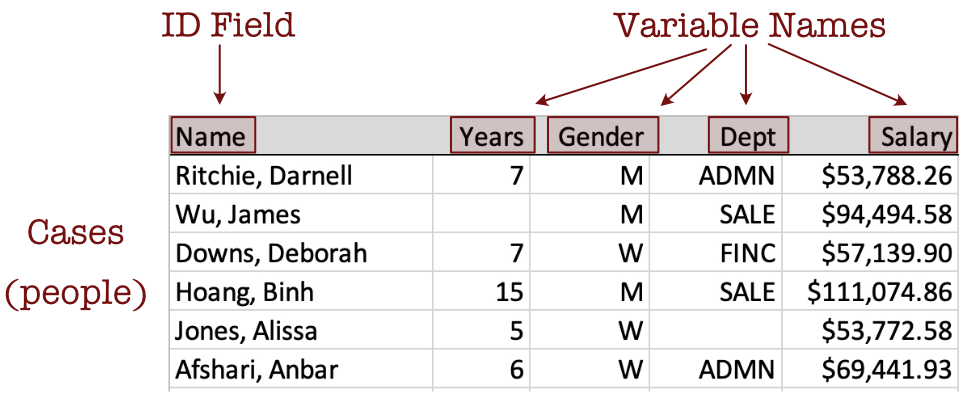
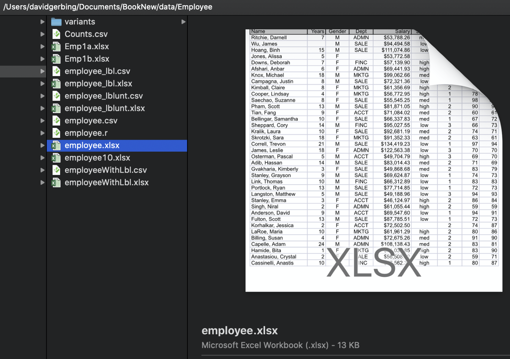
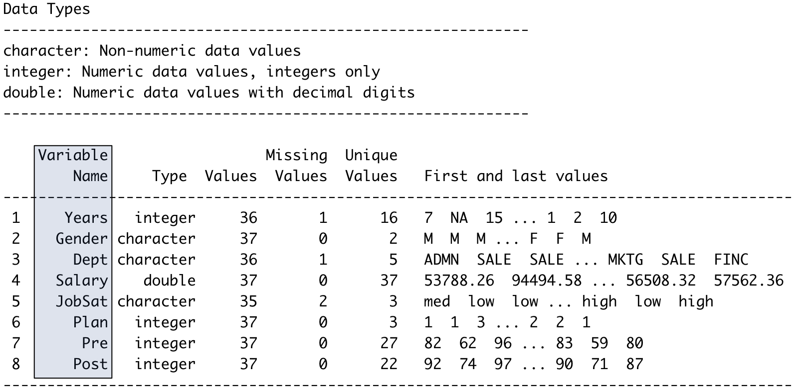
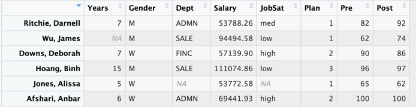

2.1 Data Table
Data analysis begins with, well, data. Analyze the data values for at least one variable, such as the company’s employee annual salaries. Organize the data values into a specific kind of structure from which analysis proceeds. To use any data analysis system, such as R, organize the data values into a table.
Video: Data Table [3:24]
Store the structured data values in a file on your computer, an accessible local network, or the World Wide Web. Encode the data table into one of several computer file formats. The formats we encounter are Excel files (.xlsx) and comma-separated value (csv) files. Identify a text file with one of several potential file types, such as .txt, but usually .csv.
The Excel data table in Figure 2.1 contains four variables: Years, Gender, Dept, and Salary, plus an ID field called Name, for a total of five columns. Figure 2.1 displays their data values for the first six employees.
Describe the data table by its columns, rows, and cell entries.
Analysis of data can proceed only after the data table and the relevant variables within it are identified.
Analysis requires the correct spelling of each variable name, including the same pattern of capitalization.
The name variable was chosen because the data values for a variable vary. Doing data analysis is the analysis of that variability. Analysis of data can proceed only after the data table and the relevant variables within it are identified.
Variables define the columns of a data table. What about the rows?
Unfortunately, the row references in the data table are not standardized. Observations are also referred to as cases, examples, samples, and instances.
Consider employee Darnell Ritchie. He has worked at the company for seven years, identifies as a man, and works in administration with an annual salary of $43,788.26. Two data values in this section of the data table are missing. The number of years James Wu has worked at the company is not recorded, nor is the department in which Alissa Jones works.
2.2 Read Data into R
To begin an analysis, read your data stored as a computer file into R. Your data, organized as a data table, exists somewhere as a data file stored somewhere on a computer system, your computer or a network, including the web. Here is how you access your data.
The data table can exist in one of many different formats, including Excel. Figure 2.2 shows a data table as an Excel file named employee.xlsx stored on a (Macintosh) computer. Figure 2.1 shows the first several lines of this data table in detail.

The data table is stored as a computer file. To analyze your data, read the data table from the computer file, which copies the data into a corresponding data table within a running R session.
In the function call to read the data, reference the data table stored on a computer system, including the web, by its file name and location. Each variable in a data table has a name, and so does the data table itself. When read into R, name the data table, the R data frame, with a name of your choice. Regardless of the file name of your data on your computer system, typically name a data table within the active R session, the data frame, as simply d for data. Not only is d easy to type, but it is also the lessR default data frame name for the data processed by its various analysis functions.
When analyzing data read into R, the same data exists in two locations: a computer file on your computer system and an R data frame within a running R app. Different locations, different names: same data. On your computer system, identify the data table by its file name and location. Within an active R session, R identifies the same data from the data file by the data frame name it was read into R under, such as d.
Analogous to multiple Excel worksheets in a single Excel file, a running R session can contain multiple data frames, limited only by the amount of available memory.
Do a function call to read the data from a file into a data frame of a running R application. Multiple functions to read data into R are available, both from the downloaded packages and from functions in different packages. We use the lessR function Read() for its simplicity and helpful output to better understand the data that R reads into a data frame.
2.2.1 Browse for the Data Table File
To read the data, direct R to the location of the data file. R cannot read the data file until it knows where the data is stored. One option is to browse for the location of the data file on your computer system. You navigate your file system until you locate the file.
As with all R (and Excel and Python and everything else) functions, the call to invoke the function includes a matching set of parentheses. Information within the parentheses specifies the information provided to the function for analysis.
The following Read() statement reads the data stored in a rectangular data table from an external file on your computer, such as an Excel file.
Video: Read Data [3:35]
Example 2.1
d <- Read("")We need a way to instruct R where to store the data it reads. The lessR Read() function reads data from an external file into R. Within R, that data needs to be stored in a data frame. The above Read() statement reads the data from the file into an R data frame called d.
The text output of any R function goes somewhere. If you do not specify an object to receive that output, it goes to the Console. Doing a Read() without assigning the output to a data frame dumps the contents of the data frame to the R Console, without access for later analysis.
You can also use an ordinary equals sign, =, to indicate the assignment, but the <- shows the flow of information in the assignment, and is more widely used by R practitioners.
2.2.2 Specify Location of the Data Table File
One way to locate a data file to be read explicitly specifies the location of the file within the quotes and parentheses of the Read() function. Specify either the full path name of a file on your computer system, or specify a web address that locates the data table on the web. Again, read the data into the d data frame, remembering to include the quotes.
With Excel, R, or any other computer apps that process data, enclose character string values, such as a file name or web address (URL), in quotes. For example, to read the data from the web data file employee.xlsx into the data frame d, invoke the following Read() function call.
Example 2.2
d <- Read("http://web.pdx.edu/~gerbing/data/employee.xlsx")To specify a location of the data file on your computer, provide the full path name that locates and names your data file. To obtain this path name, first browse for the file with Read(""). The resulting output displays the path name of the identified file. Copy this path name and insert between the quotes of Read(""), save this and other R function calls in a text file for future analyses without needing to browse for its location.
In summary, with the Read() function, either put nothing between the quotes to browse for a data file, or specify the data file’s location on your computer system or the web. Read data from a file into an R data frame, usually named d, but you can choose any valid name.
2.2.3 Output of Read()
As with most any data analysis system, R organizes analyses by variable name, so knowing the exact variable names is critical. This specification includes the pattern of capitalization. The Read() function automatically displays these names. The variables are in the columns, so to specify a variable is to select a column of data values.
Read() also displays the storage type of each variable: as numbers with or without decimal digits, or as character strings, in this example. Also listed are the number of complete and missing values for each variable, the number of unique values for each variable, and sample data values. Figure 2.3 lists the output from reading the employee.xlsx data file.

Always compare the output of Read() with the actual data file to ensure that your data was correctly read. Never read data into R or any other system without first checking that the data values in the data table stored on some computer system correspond to the variables and data values read into a R data frame.
To display many variables, Read() lists the information for each variable in a row. Of course, the data file organizes the variables by column. Compare the output of Read() with the description of the data file in Figure 2.1 and Figure 2.2.
2.3 Display the Data
To analyze data, first understand the data. You should know what the data values look like for each variable, and you should know the variable names. The output of the lessR function Read() assists this understanding, but you often want to view the data directly.
One way to view the contents of any R object, of which there are many types, is to enter the name of the object at the Console, in response to the command prompt >.
Video: Display the data [1:49]
Example 2.3
dOf course, for even medium-sized data tables we typically do not need or want to view the entire data table. Use the R head() function to list the variable names and, by default, the first six rows of data, here for the data frame d.
R also provides a corresponding function tail() that lists the data values at the end of the file.
Example 2.4
head(d) Name Years Gender Dept Salary JobSat Plan Pre Post
1 Ritchie, Darnell 7 M ADMN 53788.26 med 1 82 92
2 Wu, James NA M SALE 94494.58 low 1 62 74
3 Hoang, Binh 15 M SALE 111074.86 low 3 96 97
4 Jones, Alissa 5 W <NA> 53772.58 <NA> 1 65 62
5 Downs, Deborah 7 W FINC 57139.90 high 2 90 86
6 Afshari, Anbar 6 W ADMN 69441.93 high 2 100 100Compare this output, the representation of the data within R, to the data table in Figure 2.1 as an Excel file. Same data, different locations.
Another option to view the data read into R invokes the Base R View() function, which works directly from within RStudio.
View(d)One advantage of this form of viewing the data is that you can view the data just by scrolling.
Figure 2.4 shows the display of data within RStudio with View(), with the scroll bar at the right-side of the window pane.

View() data display from within RStudio.
The separation of data from the instructions to process that data is a welcome benefit of R over Excel. You should, however, view your data on a regular basis in order to understand what you are analyzing.
When something does not work the way you expected it to work, look at your data! Often, the problem can be fixed because the computer stored your data differently than the way you thought the data would be stored. Viewing your data as you proceed with an analysis is a crucial step toward successful analysis.
A discrepancy between what you thought was your data and what actually is your data is often the source of an error trying to do a data analysis.
Note also the representation of missing data within a R data frame.
The blank cells in the Excel file, Figure 2.1, are replaced with either NA for the numerical variable Years, and <NA> for the variable Dept with non-numerical values.
2.4 Two Types of Variables
Always distinguish continuous variables from categorical variables. This distinction between these two types of variables is fundamental in data analysis.
Examples of continuous variables are Salary or Time, defined on a numerical scale with many unique values. Examples of categorical variables are Gender or State of Residence. Each categorical variable has just a relatively few number of possible values compared to a continuous value. This distinction of continuous and categorical variables is common to virtually every data analysis project.
Sometimes that distinction can get a little confusing because numeric variables with integer values can be quantitative or qualitative. For example, sometimes Man, Woman, and Other are encoded as 0, 1, and 2, respectively, for three levels of the categorical variable Gender. However, these integer values are just labels for different non-numeric categories. Best to avoid this confusion. Instead, encode categorical variables with non-numeric values, such as Gender, for example, with M, W, and O for Other.
To distinguish between continuous and categorical variables, determine if the values of a variable are on a numerical scale. If there is a relatively large number of unique values that can be ordered from smallest to largest value, the variable is likely continuous. A categorical variable, such as Gender, however, coded numerically, does not imply the values are on a numerical scale. For example, Woman coded a 1, is not more than Man, coded as 0, or vice versa.
For example, Gender encoded as 0, 1, and 2 has three possible values, and usually tens if not hundreds of rows of data, each of which contains one of those three values.
2.5 Categorical Variables as Factors
Regardless of the data analysis system used to analyze the data, the information contained by a categorical variable is generally not sufficient for its analysis. To represent categorical variables with the proper structure, R provides a specific variable type.
Factor: A representation of a categorical variable within R.
To provide this information, usually convert all categorical variables into R factors. The following are two of the most common situations in which the analyst needs to provide more information about categorical variables.
2.5.1 Order the Categories
- The values of the categorical variable are character strings, but the ordering of the values displayed in the analyses need to be specified.
For example, suppose a categorical variable named Size has three values: “low”, “medium”, and “high”. In any subsequent analysis, such as a data visualization, the preferred ordering of the categories is in that order. However, R, or any other system, does not understand the meaning of those categories and so alphabetizes them by default. Any bar graph, for example, will have the bars in the order: “high”, “low”, and medium”
If the variable Size is in the d data frame, then specify the correct order by defining the following factor.
d$Size <- factor(d$Size, levels=c("low", "medium", "high"))Of course, follow the same format for any categorical variable with character string values.
2.5.2 Label the Categories
- Attach labels to the numerical categories of a categorical variable.
For example, suppose that the responses to an item on an attitude survey named m01 in the d data frame were recorded as a 1, 2, or 3. Suppose that those numerical values correspond to “Disagree”, “Neutral”, and “Agree”. To label the numerical responses according to their meaning on the output displays, define m01 as a factor accordingly.
d$m01$ <- factor(d$m01, levels=1:3, labels=c("Disagree", "Neutral", Agree"))The levels parameter specifies the values of the variable as they occur in the data. The 1:3 means the data values for this variable consist the integers from 1 to 3. The labels parameter specifies the labels to display on the output in place of the numbers, listed in the same order as the corresponding levels.